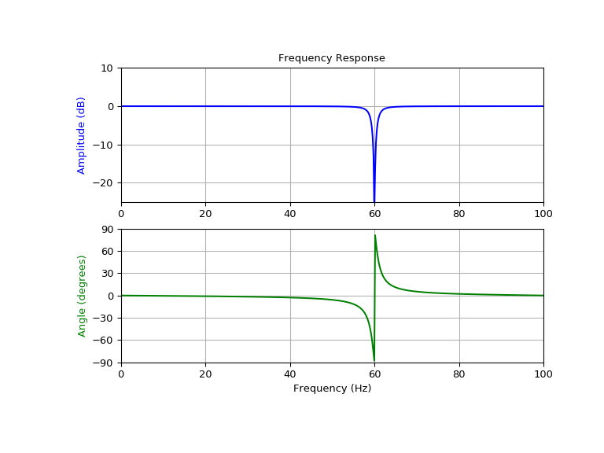

scipy.signal.iirnotch¶
-
scipy.signal.iirnotch(w0, Q, fs=2.0)[source]¶ Design second-order IIR notch digital filter.
A notch filter is a band-stop filter with a narrow bandwidth (high quality factor). It rejects a narrow frequency band and leaves the rest of the spectrum little changed.
- Parameters
- w0float
Frequency to remove from a signal. If fs is specified, this is in the same units as fs. By default, it is a normalized scalar that must satisfy
0 < w0 < 1, withw0 = 1corresponding to half of the sampling frequency.- Qfloat
Quality factor. Dimensionless parameter that characterizes notch filter -3 dB bandwidth
bwrelative to its center frequency,Q = w0/bw.- fsfloat, optional
The sampling frequency of the digital system.
New in version 1.2.0.
- Returns
- b, andarray, ndarray
Numerator (
b) and denominator (a) polynomials of the IIR filter.
See also
Notes
New in version 0.19.0.
References
- 1
Sophocles J. Orfanidis, “Introduction To Signal Processing”, Prentice-Hall, 1996
Examples
Design and plot filter to remove the 60 Hz component from a signal sampled at 200 Hz, using a quality factor Q = 30
>>> from scipy import signal >>> import matplotlib.pyplot as plt
>>> fs = 200.0 # Sample frequency (Hz) >>> f0 = 60.0 # Frequency to be removed from signal (Hz) >>> Q = 30.0 # Quality factor >>> # Design notch filter >>> b, a = signal.iirnotch(f0, Q, fs)
>>> # Frequency response >>> freq, h = signal.freqz(b, a, fs=fs) >>> # Plot >>> fig, ax = plt.subplots(2, 1, figsize=(8, 6)) >>> ax[0].plot(freq, 20*np.log10(abs(h)), color='blue') >>> ax[0].set_title("Frequency Response") >>> ax[0].set_ylabel("Amplitude (dB)", color='blue') >>> ax[0].set_xlim([0, 100]) >>> ax[0].set_ylim([-25, 10]) >>> ax[0].grid() >>> ax[1].plot(freq, np.unwrap(np.angle(h))*180/np.pi, color='green') >>> ax[1].set_ylabel("Angle (degrees)", color='green') >>> ax[1].set_xlabel("Frequency (Hz)") >>> ax[1].set_xlim([0, 100]) >>> ax[1].set_yticks([-90, -60, -30, 0, 30, 60, 90]) >>> ax[1].set_ylim([-90, 90]) >>> ax[1].grid() >>> plt.show()
